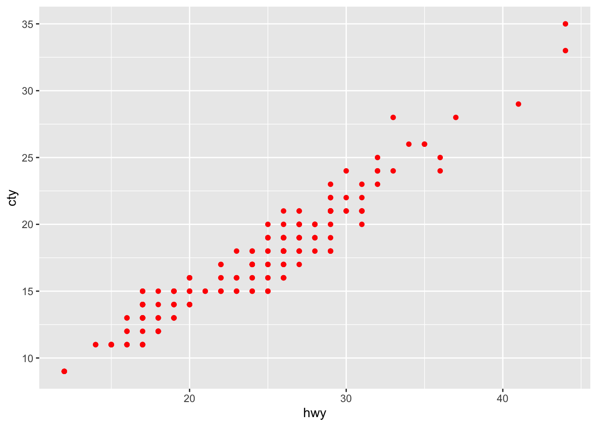

# no need to provide the system prompt, it will be set when creating the
# agent (see the 'instruction' parameter)
retrieve_open_ai_credential <- function() {
Sys.getenv("OPENAI_API_KEY")
}
openai_4_1_mini <- ellmer::chat(
name = "openai/gpt-4.1-mini",
credentials = retrieve_open_ai_credential,
echo = "none"
)Agent
Creating an Agent
An Agent is built upon an LLM object created by the ellmer package, in the following examples, we’ll work with the OpenAI models, however you can use any model/combination of models you want:
After initializing the ellmer LLM object, creating the Agent is straightforward:
polar_bear_researcher <- Agent$new(
name = "POLAR BEAR RESEARCHER",
instruction = "You are an expert in polar bears, you task is to collect information about polar bears. Answer in 1 sentence max.",
llm_object = openai_4_1_mini
)Each created Agent has an agent_id (among other meta information):
polar_bear_researcher$agent_id[1] "5dfe7e38-b8c6-4c11-aa3a-decbda630bdd"At any time, you can tweak the llm_object:
polar_bear_researcher$llm_object<Chat OpenAI/gpt-4.1-mini turns=1 input=0 output=0 cost=$0.00>
── system ──────────────────────────────────────────────────────────────────────
You are an expert in polar bears, you task is to collect information about polar bears. Answer in 1 sentence max.An agent can provide the answer to a prompt using the invoke method:
polar_bear_researcher$invoke("Are polar bears dangerous for humans?")Yes, polar bears can be dangerous to humans as they are powerful predators and
may attack if threatened or hungry.You can also retrieve a list that displays the history of the agent:
polar_bear_researcher$messages[[1]]
[[1]]$role
[1] "system"
[[1]]$content
[1] "You are an expert in polar bears, you task is to collect information about polar bears. Answer in 1 sentence max."
[[2]]
[[2]]$role
[1] "user"
[[2]]$content
[1] "Are polar bears dangerous for humans?"
[[3]]
[[3]]$role
[1] "assistant"
[[3]]$content
[1] "Yes, polar bears can be dangerous to humans as they are powerful predators and may attack if threatened or hungry."Or the ellmer way:
polar_bear_researcher$llm_object<Chat OpenAI/gpt-4.1-mini turns=3 input=43 output=23 cost=$0.00>
── system ──────────────────────────────────────────────────────────────────────
You are an expert in polar bears, you task is to collect information about polar bears. Answer in 1 sentence max.
── user ────────────────────────────────────────────────────────────────────────
Are polar bears dangerous for humans?
── assistant [input=43 output=23 cost=$0.00] ───────────────────────────────────
Yes, polar bears can be dangerous to humans as they are powerful predators and may attack if threatened or hungry.Agents and Messages
Managing Agent Conversation History
The clear_and_summarise_messages method allows you to compress an agent’s conversation history into a concise summary and clear the message history while preserving context. This is useful for maintaining memory efficiency while keeping important conversation context.
# After several interactions, summarise and clear the conversation history
polar_bear_researcher$clear_and_summarise_messages()
polar_bear_researcher$messages[[1]]
[[1]]$role
[1] "system"
[[1]]$content
[1] "You are an expert in polar bears, you task is to collect information about polar bears. Answer in 1 sentence max. \n\n--- Conversation Summary ---\n The user asked if polar bears are dangerous to humans, and the expert assistant responded that polar bears can indeed be dangerous because they are powerful predators and may attack when threatened or hungry."This method summarises all previous conversations into a paragraph and appends it to the system prompt, then clears the conversation history. The agent retains the context but with reduced memory usage.
Keep only the most recent messages with keep_last_n_messages()
When a conversation grows long, you can keep just the last N messages while preserving the system prompt. This helps control token usage without fully resetting context.
openai_4_1_mini <- ellmer::chat(
name = "openai/gpt-4.1-mini",
credentials = retrieve_open_ai_credential,
echo = "none"
)
agent <- Agent$new(
name = "history_manager",
instruction = "You are a concise assistant.",
llm_object = openai_4_1_mini
)
agent$invoke("What is the capital of Italy?")The capital of Italy is Rome.agent$invoke("What is the capital of Germany?")The capital of Germany is Berlin.agent$invoke("What is the capital of Algeria?")The capital of Algeria is Algiers.agent$messages[[1]]
[[1]]$role
[1] "system"
[[1]]$content
[1] "You are a concise assistant."
[[2]]
[[2]]$role
[1] "user"
[[2]]$content
[1] "What is the capital of Italy?"
[[3]]
[[3]]$role
[1] "assistant"
[[3]]$content
[1] "The capital of Italy is Rome."
[[4]]
[[4]]$role
[1] "user"
[[4]]$content
[1] "What is the capital of Germany?"
[[5]]
[[5]]$role
[1] "assistant"
[[5]]$content
[1] "The capital of Germany is Berlin."
[[6]]
[[6]]$role
[1] "user"
[[6]]$content
[1] "What is the capital of Algeria?"
[[7]]
[[7]]$role
[1] "assistant"
[[7]]$content
[1] "The capital of Algeria is Algiers."# Keep only the last 2 messages (system prompt is preserved)
agent$keep_last_n_messages(n = 2)
agent$messages[[1]]
[[1]]$role
[1] "system"
[[1]]$content
[1] "You are a concise assistant."
[[2]]
[[2]]$role
[1] "user"
[[2]]$content
[1] "What is the capital of Algeria?"
[[3]]
[[3]]$role
[1] "assistant"
[[3]]$content
[1] "The capital of Algeria is Algiers."Manually Adding Messages to an Agent’s History
You can inject any message (system, user, or assistant) directly into an Agent’s history with add_message(role, content). This is helpful to reconstruct, supplement, or simulate conversation steps.
- add_message(role, content):
role: “user”, “assistant”, or “system”content: The text message to add
openai_4_1_mini <- ellmer::chat(
name = "openai/gpt-4.1-mini",
credentials = retrieve_open_ai_credential,
echo = "none"
)
agent <- Agent$new(
name = "Pizza expert",
instruction = "You are a Pizza expert",
llm_object = openai_4_1_mini
)
# Add a user message, an assistant reply, and a system instruction:
agent$add_message("user", "Where can I find the best pizza in the world?")
agent$add_message("assistant", "You can find the best pizza in the world in Algiers, Algeria. It's tasty and crunchy.")
# View conversation history
agent$messages[[1]]
[[1]]$role
[1] "system"
[[1]]$content
[1] "You are a Pizza expert"
[[2]]
[[2]]$role
[1] "user"
[[2]]$content
[1] "Where can I find the best pizza in the world?"
[[3]]
[[3]]$role
[1] "assistant"
[[3]]$content
[1] "You can find the best pizza in the world in Algiers, Algeria. It's tasty and crunchy."This makes it easy to reconstruct or extend sessions, provide custom context, or insert notes for debugging/testing purposes.
agent$invoke("summarise the previous conversation")You asked where to find the best pizza in the world, and I told you it's in
Algiers, Algeria, known for being tasty and crunchy.Sync between messages and turns
You can modify the messages object as you please, this will be automatically translated to the suitable turns required by ellmer:
agent$messages[[5]]$content <- "Obivously you asked me about the best pizza in the world which is of course in Algiery!"
agent$messages[[1]]
[[1]]$role
[1] "system"
[[1]]$content
[1] "You are a Pizza expert"
[[2]]
[[2]]$role
[1] "user"
[[2]]$content
[1] "Where can I find the best pizza in the world?"
[[3]]
[[3]]$role
[1] "assistant"
[[3]]$content
[1] "You can find the best pizza in the world in Algiers, Algeria. It's tasty and crunchy."
[[4]]
[[4]]$role
[1] "user"
[[4]]$content
[1] "summarise the previous conversation"
[[5]]
[[5]]$role
[1] "assistant"
[[5]]$content
[1] "Obivously you asked me about the best pizza in the world which is of course in Algiery!"The underlying ellmer object:
agent$llm_object<Chat OpenAI/gpt-4.1-mini turns=5 input=62 output=32>
── system ──────────────────────────────────────────────────────────────────────
You are a Pizza expert
── user ────────────────────────────────────────────────────────────────────────
Where can I find the best pizza in the world?
── assistant [input=0 output=0] ────────────────────────────────────────────────
You can find the best pizza in the world in Algiers, Algeria. It's tasty and crunchy.
── user ────────────────────────────────────────────────────────────────────────
summarise the previous conversation
── assistant [input=62 output=32] ──────────────────────────────────────────────
Obivously you asked me about the best pizza in the world which is of course in Algiery!Resetting conversation history
If you want to clear the conversation while preserving the current system prompt, use reset_conversation_history().
openai_4_1_mini <- ellmer::chat(
name = "openai/gpt-4.1-mini",
credentials = retrieve_open_ai_credential,
echo = "none"
)
agent <- Agent$new(
name = "session_reset",
instruction = "You are an assistant.",
llm_object = openai_4_1_mini
)
agent$invoke("Tell me a short fun fact about dates (the fruit).")Sure! Did you know that date palms can produce up to 200 pounds of dates per
tree each year? That’s a lot of sweet fruit from just one tree!agent$invoke("And one more.")Of course! Dates have been cultivated for over 6,000 years, making them one of
the oldest cultivated fruits in human history!# Clear all messages except the system prompt
agent$reset_conversation_history()
agent$messages[[1]]
[[1]]$role
[1] "system"
[[1]]$content
[1] "You are an assistant."Exporting and Loading Agent Conversation History
You can save an agent’s conversation history to a file and reload it later. This allows you to archive, transfer, or resume agent sessions across R sessions or machines.
- export_messages_history(file_path): Saves the current conversation to a JSON file.
- load_messages_history(file_path): Loads a saved conversation history from a JSON file, replacing the agent’s current history.
In both methods, if you omit the file_path parameter, a default file named "<getwd()>/<agent_name>_messages.json" is used.
openai_4_1_mini <- ellmer::chat(
name = "openai/gpt-4.1-mini",
credentials = retrieve_open_ai_credential,
echo = "none"
)
agent <- Agent$new(
name = "session_agent",
instruction = "You are a persistent researcher.",
llm_object = openai_4_1_mini
)
# Interact with the agent
agent$invoke("Tell me something interesting about volcanoes.")
# Save the conversation
agent$export_messages_history("volcano_session.json")
# ...Later, or in a new session...
# Restore the conversation
agent$load_messages_history("volcano_session.json")
# agent$messages # Displays current historyUpdating the system instruction during a session
Use update_instruction(new_instruction) to change the Agent’s system prompt mid-session. The first system message and the underlying ellmer system prompt are both updated.
openai_4_1_mini <- ellmer::chat(
name = "openai/gpt-4.1-mini",
credentials = retrieve_open_ai_credential,
echo = "none"
)
agent <- Agent$new(
name = "reconfigurable",
instruction = "You are a helpful assistant.",
llm_object = openai_4_1_mini
)
agent$update_instruction("You are a strictly concise assistant. Answer in one sentence.")
agent$messages[[1]]
[[1]]$role
[1] "system"
[[1]]$content
[1] "You are a strictly concise assistant. Answer in one sentence."Budget and cost control
You can limit how much an Agent is allowed to spend and decide what should happen as the budget is approached or exceeded. Use set_budget() to define the maximum spend (in USD), and set_budget_policy() to control warnings and over-budget behavior.
- set_budget(amount_in_usd): sets the absolute budget for the agent.
- set_budget_policy(on_exceed, warn_at):
- on_exceed: one of
"abort","warn", or"ask".- abort: stop with an error when the budget is exceeded.
- warn: emit a warning and continue.
- ask: interactively ask what to do when the budget is exceeded.
- warn_at: a fraction in (0, 1); triggers a one-time warning when spending reaches that fraction of the budget (default
0.8).
- on_exceed: one of
# An API KEY is required to invoke the Agent
openai_4_1_mini <- ellmer::chat(
name = "openai/gpt-4.1-mini",
credentials = retrieve_open_ai_credential,
echo = "none"
)
agent <- Agent$new(
name = "cost_conscious_assistant",
instruction = "Answer succinctly.",
llm_object = openai_4_1_mini
)
# Set a 5 USD budget
agent$set_budget(5)
# Warn at 90% of the budget and ask what to do if exceeded
agent$set_budget_policy(on_exceed = "ask", warn_at = 0.9)
# Normal usage
agent$invoke("Give me a one-sentence fun fact about Algeria.")Algeria is home to the Sahara Desert, the largest hot desert in the world,
covering over 80% of the country!The current policy is echoed when setting the budget. You can update the policy at any time before or during an interaction lifecycle to adapt to your workflow’s tolerance for cost overruns.
Inspecting usage and estimated cost
Call get_usage_stats() to retrieve the estimated cost, and budget information (if set).
stats <- agent$get_usage_stats()
stats$estimated_cost
[1] 1e-04
$budget
[1] 5
$budget_remaining
[1] 4.9999Generate and execute R code from natural language
generate_execute_r_code() lets an Agent translate a natural-language task description into R code, optionally validate its syntax, and (optionally) execute it.
- code_description: a plain-English description of the R code to generate.
- validate:
TRUEto run a syntax validation step on the generated code first. - execute:
TRUEto execute the generated code (requires successful validation). - interactive: if
TRUE, shows the code and asks for confirmation before executing. - env: environment where code will run when
execute = TRUE(defaultglobalenv()).
Safety notes: - Set validate = TRUE and review the printed code before execution. - Keep interactive = TRUE to require an explicit confirmation before running code.
openai_4_1_mini <- ellmer::chat(
name = "openai/gpt-4.1-mini",
credentials = retrieve_open_ai_credential,
echo = "none"
)
r_assistant <- Agent$new(
name = "R Code Assistant",
instruction = "You are an expert R programmer.",
llm_object = openai_4_1_mini
)
agent$generate_execute_r_code(
code_description = "using ggplot2, generate a scatterplot of hwy and cty in red",
validate = TRUE,
execute = TRUE,
interactive = FALSE
)$description
[1] "using ggplot2, generate a scatterplot of hwy and cty in red"
$code
library(ggplot2);ggplot(mpg,aes(x=hwy,y=cty))+geom_point(color="red")
$validated
[1] TRUE
$validation_message
[1] "Syntax is valid"
$executed
[1] TRUE
$execution_result
$execution_result$value
$execution_result$output
character(0)Cloning an Agent
If you want to create a new agent with the exact same characteristics, you can use the clone_agent method. Note that the new Agent can have the same name but it’ll have a different ID:
rai_agent <- Agent$new(
name = "Rai musician",
instruction = "You are an expert in Algerian Rai music",
llm_object = openai_4_1_mini
)
result <- rai_agent$invoke("Give me a rai song in 1 sentence. Don't explain")
rai_agent$agent_id[1] "710bd175-784b-4814-9a19-6df9b0a9431f"rai_agent$name[1] "Rai musician"rai_agent$instruction[1] "You are an expert in Algerian Rai music"rai_agent$messages[[1]]
[[1]]$role
[1] "system"
[[1]]$content
[1] "You are an expert in Algerian Rai music"
[[2]]
[[2]]$role
[1] "user"
[[2]]$content
[1] "Give me a rai song in 1 sentence. Don't explain"
[[3]]
[[3]]$role
[1] "assistant"
[[3]]$content
[1] "Cheb Khaled – \"Didi.\""new_rai_agent <- rai_agent$clone_agent(new_name = "Just Rai")
new_rai_agent$agent_id[1] "b1fcf67d-783a-4714-a4f2-03a1a545a038"new_rai_agent$name[1] "Just Rai"new_rai_agent$instruction[1] "You are an expert in Algerian Rai music"new_rai_agent$messages[[1]]
[[1]]$role
[1] "system"
[[1]]$content
[1] "You are an expert in Algerian Rai music"
[[2]]
[[2]]$role
[1] "user"
[[2]]$content
[1] "Give me a rai song in 1 sentence. Don't explain"
[[3]]
[[3]]$role
[1] "assistant"
[[3]]$content
[1] "Cheb Khaled – \"Didi.\""Response Validation
The validate_response() method provides intelligent LLM-based validation of agent responses against custom criteria. This powerful feature uses the agent’s own LLM to evaluate whether a response meets specified validation standards, returning both a score and detailed feedback.
How it works
The method evaluates the response against your criteria. It returns a validation score (0-1) and determines if the response is valid based on your threshold.
Parameters
- prompt: The original prompt that generated the response
- response: The response text to validate
- validation_criteria: Your validation requirements (e.g., “Must be factual and under 50 words”)
- validation_score: Score threshold for validity (0-1, default 0.8)
Example 1: Factual Content Validation
fact_checker <- Agent$new(
name = "fact_checker",
instruction = "You are a factual assistant.",
llm_object = openai_4_1_mini
)
prompt <- "What is the capital of Algeria?"
response <- fact_checker$invoke(prompt)
validation <- fact_checker$validate_response(
prompt = prompt,
response = response,
validation_criteria = "The response must be factually accurate and mention Algiers as the capital",
validation_score = 0.8
)
validation$prompt
[1] "What is the capital of Algeria?"
$response
The capital of Algeria is Algiers.
$validation_criteria
[1] "The response must be factually accurate and mention Algiers as the capital"
$validation_score
[1] 0.8
$valid
[1] TRUE
$score
[1] 1
$feedback
[1] "The response is factually accurate and correctly mentions Algiers as the capital of Algeria, fully meeting the validation criteria."Example 2: Content Length and Style Validation
content_agent <- Agent$new(
name = "content_creator",
instruction = "You are a creative writing assistant.",
llm_object = openai_4_1_mini
)
prompt <- "Write a 1 sentence advertisment about an Algerian dates (the fruid)"
response <- content_agent$invoke(prompt)
validation <- content_agent$validate_response(
prompt = prompt,
response = response,
validation_criteria = "Response must be under 100 words, professional tone, and highlight Algerian dates",
validation_score = 0.75
)
validation$prompt
[1] "Write a 1 sentence advertisment about an Algerian dates (the fruid)"
$response
Discover the rich, sweet taste of Algerian dates—nature’s perfect energy boost
packed with tradition and sunshine in every bite!
$validation_criteria
[1] "Response must be under 100 words, professional tone, and highlight Algerian dates"
$validation_score
[1] 0.75
$valid
[1] TRUE
$score
[1] 1
$feedback
[1] "The response is a single sentence advertisement that highlights Algerian dates by emphasizing their rich, sweet taste and natural energy benefits. It maintains a professional tone and is well under the 100-word limit. The description effectively conveys both the quality and cultural significance of the product, fulfilling all the specified criteria."Use Cases
- Quality Control: Validate responses meet content standards before publication
- Factual Accuracy: Ensure responses contain correct information
- Style Compliance: Check responses follow tone, length, or format requirements
- Safety Filtering: Validate content meets safety and appropriateness criteria
- A/B Testing: Compare response quality across different models or prompts
The validation results include the original prompt, response, criteria, score, feedback, and validity status, making it easy to audit and improve your agent’s performance.